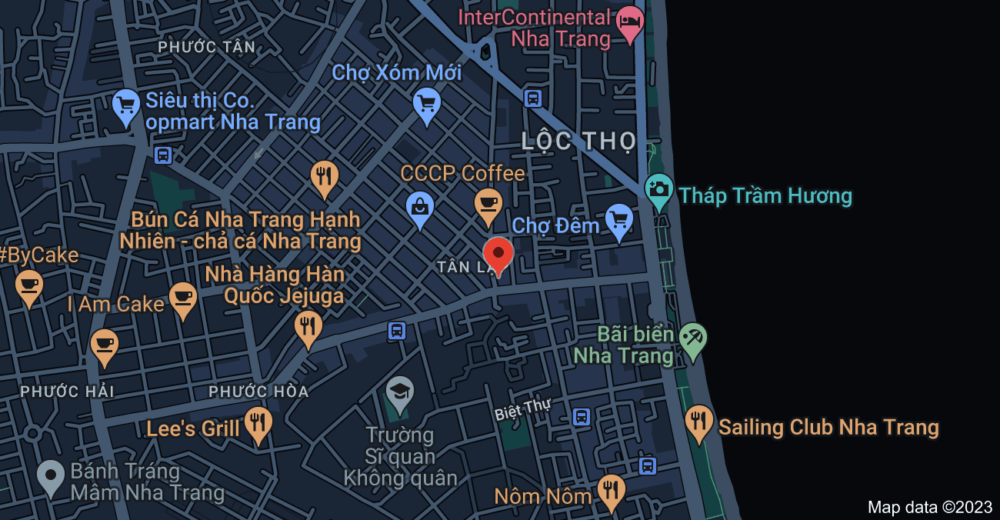

Thông Báo Của Quán
- 30/4 - 3/5 quán ưu đãi giảm 20% cho ngày lễ.
- 8/3 quán ưu đãi 15% khi mua ba món bất kì.
- 14/2 quán giảm giá 50% cho ai đang chưa có người yêu và giảm 30% cho những ai đi với người yêu.
- Quán nghỉ vào 22/01 đến ngày 24/01 tức là mùng 1, mùng 2, mùng 3 là sau hôm đó quán sẽ hoạt động trở lại mong mọi người ghé thăm và quán sẽ giảm 20% cho đến hết mùng 10.
- CHÚC MỪNG NĂM MỚI.
- 25/12 mừng ngày giáng sinh.
- . . .
Góp Ý
Xuân Thắng Food
Quán Xuân Thắng Food ở Nha Trang là một địa chỉ không thể bỏ qua cho những ai yêu thích món bánh xèo chảo đặc trưng của miền Nam Việt Nam. Quán nằm tại vị trí thuận tiện, dễ dàng tìm thấy trên đường Tô hiến thành và có không gian rộng rãi, thoáng mát, mang đến cho khách hàng cảm giác thoải mái khi thưởng thức ẩm thực.
Bánh xèo chảo của quán được chế biến từ những nguyên liệu tươi ngon và được chọn lọc kỹ càng bởi đội ngũ đầu bếp giàu kinh nghiệm. Món ăn được chế biến trên một chiếc chảo lớn, giòn rụm và thơm ngon. Quán cung cấp nhiều loại nhân khác nhau như thịt, tôm, nấm và rau cải, cho khách hàng nhiều sự lựa chọn phù hợp với khẩu vị của mình.
Ngoài ra, quán còn có nhiều món ăn khác như bánh cuốn, bánh bèo, gỏi cuốn,...với giá cả phải chăng và chất lượng tốt. Bên cạnh đó, quán cũng chú trọng đến chất lượng dịch vụ, từ cách đón tiếp khách hàng đến cách phục vụ và chăm sóc khách hàng. Nhân viên của quán rất thân thiện và nhiệt tình, luôn sẵn sàng đáp ứng mọi nhu cầu của khách hàng.
Với không gian thoáng mát, món ăn ngon và giá cả hợp lý, quán Xuân Thắng Food là một địa điểm ăn uống lý tưởng cho những người yêu thích ẩm thực và muốn thưởng thức món bánh xèo chảo đặc trưng của miền Nam Việt Nam. Hãy ghé thăm quán Xuân Thắng Food ở Nha Trang để trải nghiệm món ăn ngon và được phục vụ chu đáo, tận tình.
Địa chỉ: 85 Tô Hiến Thành, Tân Lập, Nha Trang, Khánh Hòa 650000
